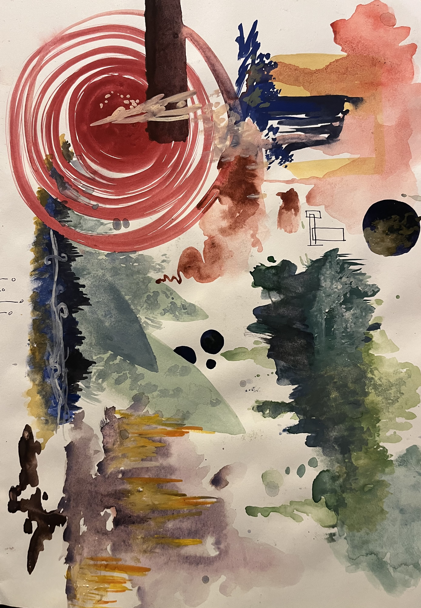
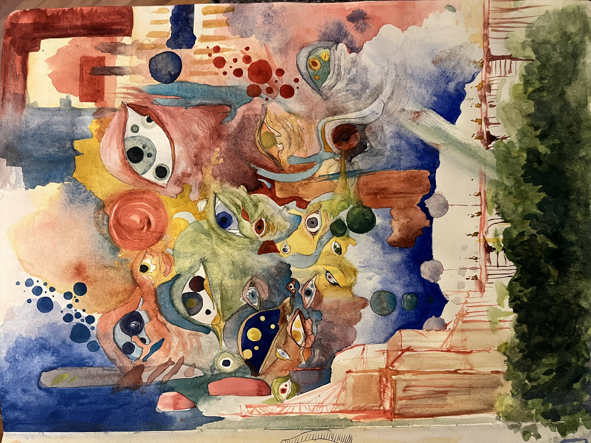
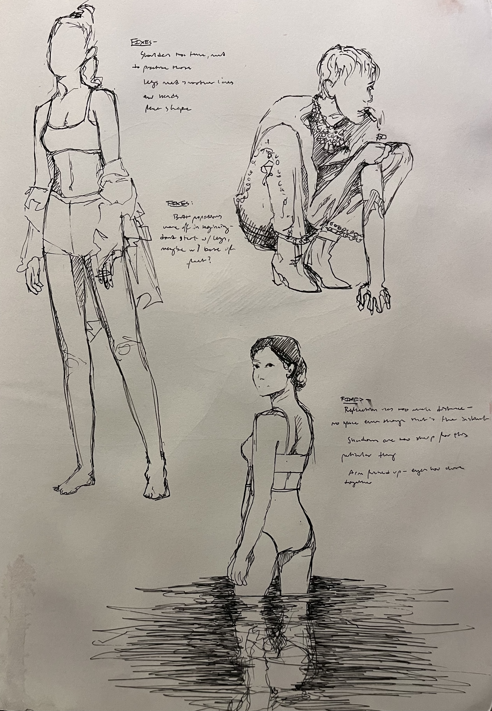
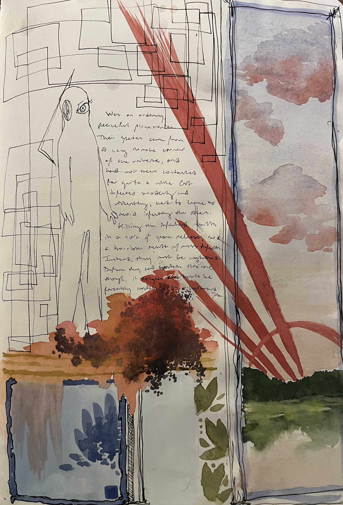
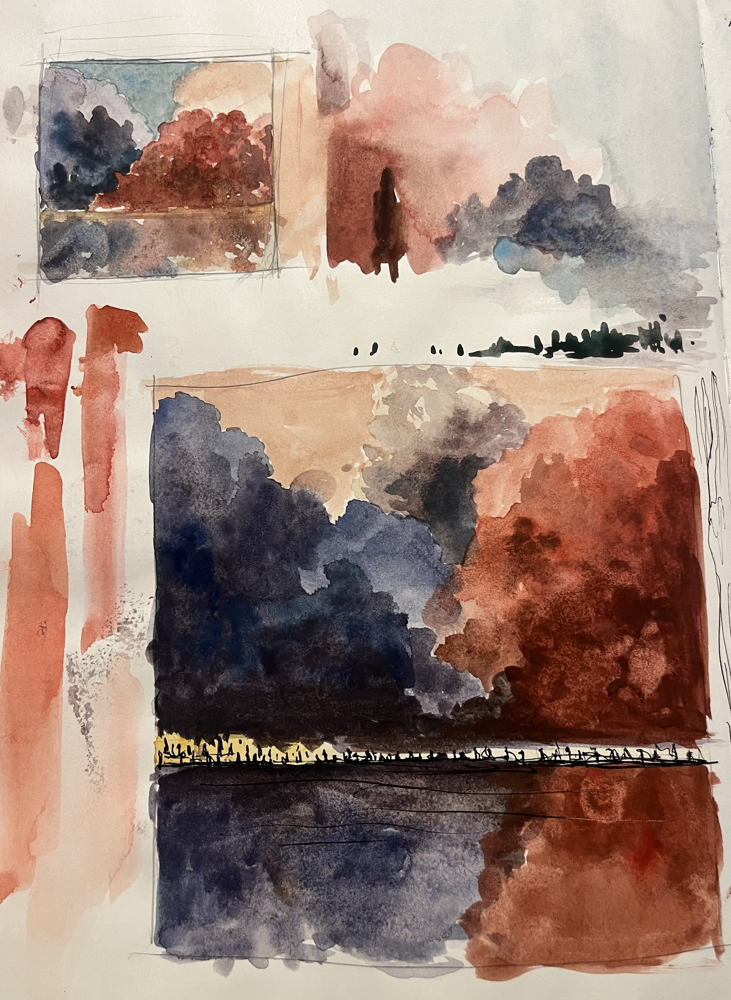
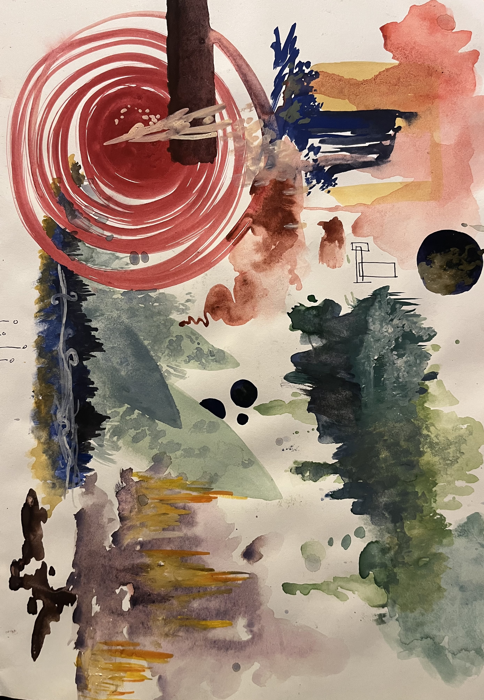
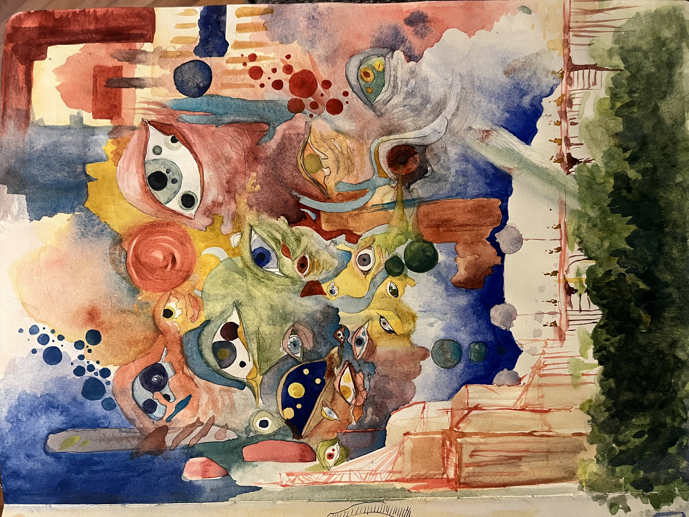
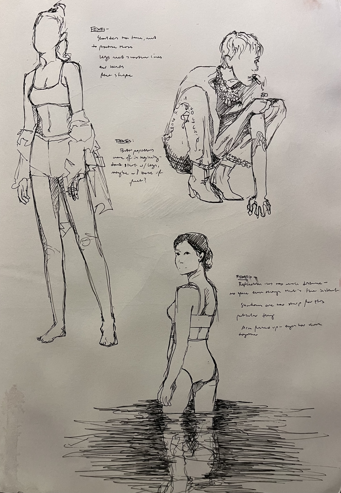
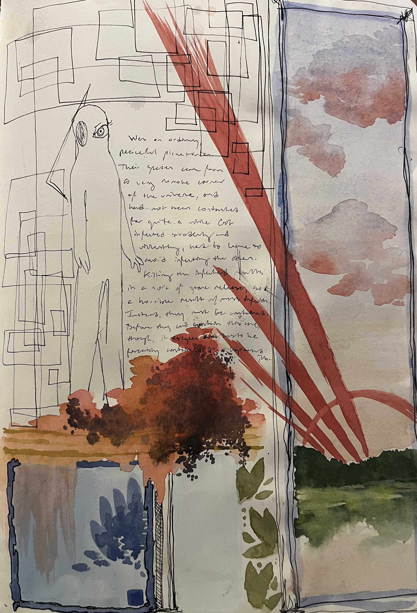
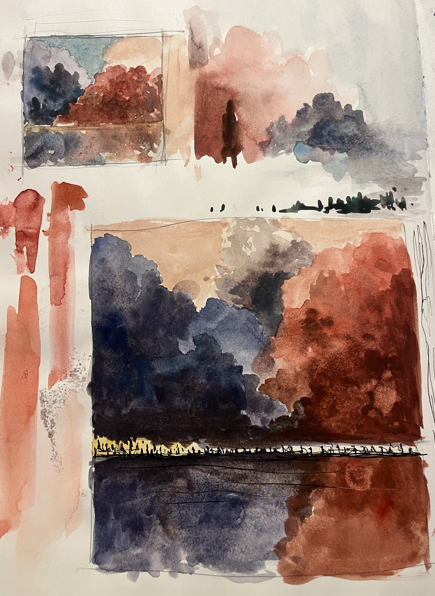

|  |  |
|  |  |
|  |  |
Perfectly Planted
here's a song i wrote with my band:
here's my github, where i hope to be posting more personal projects in the future:
github link|  |  |
|  |  |
|  | |
here's a song i wrote with my band:
here's my github, where i hope to be posting more personal projects in the future:
github link